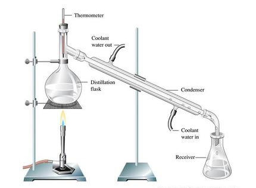
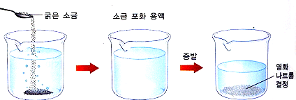

분리공정 기본 및 종류
대부분의 화학공정의 원료는 기체, 액체, 고체 상의 여러 성분들의 혼합물로 존재한다.
그 원료 혼합물로부터 다른 성분을 분리 또는 제거하고자 할 때 혼합물의 상과 다른 상이 접촉하게 되는 경우가 있다.
두 개의 서로 다른 상이 접촉하여 용질이 다른 상으로 확산하는 경우도 있다.
즉, 적절한 조건을 줌으로써 성분들이 어느 한쪽 상으로 더 이동하게 되어 성분들이 분리된다.
분리법의 종류는 아래와 같다.
증류
액체 시료 속의 불순물을 분리해내는 방법으로, 상압증유, 감압증류 수증기 증류 등이 있다.
시료의 끓는 점이 높은 경우에는 감압하거나 수증기와 함께 증류하기도 한다.

추출
액체 용매를 사용해서 고체 또는 액체 속에 있는 어떤 물질을 분리하여 뽑아내는 조작을 말한다.
산, 염기를 이용해서 화학변화를 일으키는 경우와 단순히 용해시켜 추출하는 경우가 있으며, 액체로부터의 추출에는 분별 깔대기를, 고체로부터의 추출에는 속슬레추출기를 이용한다.
재결정
고체상태의 혼합물을 분리하는 방법이다. 일반적으로 물질의 용해도에는 여러가지의 특성이 있는데 예를 들어 설탕과 소금의 혼합물 정제에는 알코올을 사용한 재결정법을 이용한다.

원심분리
단백질이나 생체물질의 분리에 이용하는 방법으로 분자량의 차이를 이용해서 초원심분리기로 분리한다.
크로마토그래피
적당한 흡착제가 들어 있는 관 속에 분리, 정제할 시료를 부으면 흡착제와 시료의 친화력 차이 때문에 시료의 각 성분이 관 속의 다른 장소에 분배되는 것을 이용한 분리수단이다. 대표적으로 가스크로마토그래피가 있다.
막공정
막을 이용한 분자 분리 공정이다. 상당히 가는 막이 두 상 사이의 분자운동 속도를 조절한다.